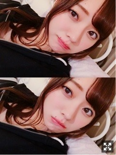
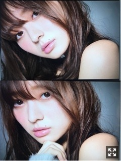
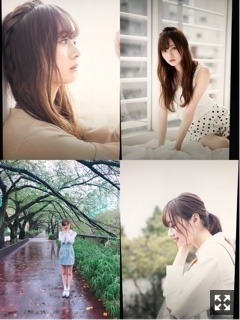
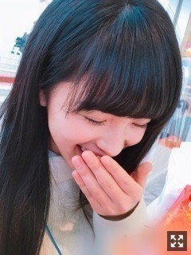
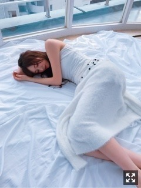

一度はまるとそれっきり。梅澤美波
みなさまこんにちは！！
乃木坂46 ３期生の
梅澤美波です！！

AGESTOCKから帰宅して
ゴロゴロするうめざわです〜
お風呂沸くの待ってるうめざわです〜
髪の毛外してポニーしてかえる梅澤です
今日もまだ１７：００にもなってないのに
外は真っ黒だよ
やっぱ冬って最高よな〜
わたし寒いの大好きで
なんだけど、冷え性だから夜は特に手足がすっごい冷えるのね
だから寝るとき足元の布団を内側に折りたたんで寝るの！
分かる人いる〜☺︎？（笑）
共感者挙手！！！( ˙-˙ )౨
お風呂の入浴剤集めるのがすき！
半身浴はいくらでもできる！
湯船に浮かぶ光のやつと、、
なにかオススメありますか？( .. )
外出たときに香る匂いが好きなんだ〜
冬の匂いって感じ（笑）
冷たい風もすき〜
歩こう〜
週末行われたAGESTOCK、
来てくださった皆様ありがとうございました！
１０曲も披露させて頂きました！
三番目の風は久しぶりにフルサイズ！
来られた方はびっくりしたんじゃないかな〜１番で終わると思ったでしょ〜２番突入したときニヤけちゃったよね〜（笑）
イベントの会場で２階、３階席があるの
物凄く新鮮だったし
同世代の方がこんなに素敵なイベントを作り上げてるんだなっておもったら
なんだかすごくて感動しちゃって
そこに携われて本当に幸せです。☺︎
盛り上がりが半端じゃなくって（笑）
もうテンションマックスでした（笑）
大きな声援ありがとう☺︎
こうして今も３期生が単独で
イベントに出させていただいたり
一つ一つを大切にしたいなあ
わたし、ちょっと踊るだけで信じられないくらい顔が真っ赤になるの！
治したいけど顔の皮膚が薄いのが原因らしくこれじゃ治らない！
こんなわたしだけど嫌いにならないでね( .. )（笑）
サイリウム、タオル、ボード、うちわ
たくさんありがとう、
ちゃんと見えてたよ☺︎☺︎
たくさんあって嬉しかったよ
いつも出番が来るまでは梅澤推しいるかな〜て不安になるけどステージ出ると安心するんや〜☺︎☺︎

よっこらしょ

どっこいしょ
いろんなわたし☺︎
本日１１／２２ 発売、
アップトゥボーイさん
オフショットです！！
私のことを考えて
女性誌っぽくをテーマに
撮影して下さいました(；＿；)
嬉しい限りです、、
この日の撮影は本当に楽しくて幸せでした！！
ずっと笑ってた！
最高のチームで撮影したのです！
本当に楽しかった！
もう本当に！
今までのグラビアとは違ったテイストだから
皆様に見てもらうのが楽しみで、、
感想教えてください( ¨̮ )
アップトゥボーイさまに
初めてソログラビアを撮影して頂いてから
約半年、
当時のグラビアを見返してみて
懐かしく感じました。
今回はまた違った、
新しい私が発見できた気がします！
年内に２回もアップトゥボーイさまにて
ソロでグラビアをさせて頂ける
有り難みを実感しております、、
美月も葉月もとんでもない可愛さだったよ( .. )♡
この間お休みがあったので、少しですが
地元へ帰って友達に会ってきました！
みんなお仕事や学校で忙しくて
ちょっとの時間だったけど
やっぱり落ち着くものですね。☺︎
小中一緒でずっと仲良しな６人で
他愛もないお話をしていました、
懐かしい空間でした、
みんな頑張ってるなあって( ¨̮ )
きっとおばあちゃんになっても
集まるんだろうな〜って思うくらいの
大切なお友達たちです☺︎
物凄く応援してくれてて
なんかもっと頑張ろう負けないって思いました、良き休日だったよ◎
あとは久しぶりにお母さんのご飯！
もうやっぱり最高！
好きなものリクエストして
永遠と食べてた！
幸せいっぱい！
このお仕事してて
毎日いろんな感情になるけど
私は自分のためだけの夢を抱いているわけではなくて
自分のためだけに頑張ってるわけではないんだなって改めて思えたから
これからも頑張ります。☺︎
質問コーナー◎
Q.自分のホクロでどこが一番すき？
A.首筋あるホクロ！みんなには見えないけどね（笑）顔は左半分にホクロ寄っててたくさんあってよう分からん〜
Q.乃木坂入ってなかったらどんな仕事してた？
A.美容関係のお仕事してたと思います！全然分からないけど！
Qカラオケ行ったら歌って欲しい歌は？
A.これはダントツで宇多田ヒカルさんの『First Love』です！歌って欲しい！
前回のSHOWROOMで、
コメントNo.398までしか読めなかったから
次回その続きからやるからね！！
ごめんね全然進まなくて( .. )
後半にコメントしてくださった方もしばしお待ちを！忘れているわけではないからね！
質問以外のコメントも読んだよありがとう☺︎
◎告知
〜紙面
▽１１／１５ EX大衆 さま
発売中です！梅桃対談！☺︎
▽１１／２２ アップトゥボーイ さま
本日発売！お手に取ってみてほしいです、今までのグラビアとは違った私がいます、
〜その他
▽乃木坂文庫
発売中！
▽１１／２１ 乃木坂46 リズムフェスティバル
遂に配信スタートしました！私もやろうっと☺︎
年末って聞くと焦るね( .. )
寂しくなるね( .. )
この間ももこと
アンパンマンミュージアム行ってきたの！

彼女感。
隣にいるのいいでしょ〜
ちっちゃい子たくさんで癒されるし
ももこもベイビーみたいだったし
もう子供たちに囲まれて幸せだった☺︎
たぶんわたし保護者に見えてたかもね（笑）
それは言いすぎか（笑）
ずっと笑ってた☺︎
気使わなくていいし楽ちん！
早く旅行いきたいね〜
そんなある日の梅桃物語でしたん。☺︎
（笑）
EX大衆さま読んでいただけたかなあ
昔から今まで私たち２人のことを語りました☺︎
まだの方はぜひ☺︎
いつの間にか本格的な冬が来てて
なんだか焦ってるというか
冬が好きなんだけど寂しくなる不思議なきもち〜
握手会１２月までないの寂しいね、
早くみんなと話したいなあ
冬がいっちゃんすきや〜

オフショット第２弾
これは撮影の合間で、
待ってるふとしたとき
マネージャーさんが撮ってくれてたの（笑）
楽しかったなあ〜
それじゃあまたねみんね
おやすみ
夢に出させてね〜夢で逢おうな〜（笑）
頑張る目的を常に持っていたいなあ
口に出さないとしても、目標も常に持っていたいです、自信に繋がる何かが欲しいなって
今を頑張る自分なりに考えて活動していたい！後悔しないアイドル生活を送りたいなあ
みんなもがんばろな〜
Original：https://www.nogizaka46.com/s/n46/diary/detail/41922?ima=0517&cd=MEMBER